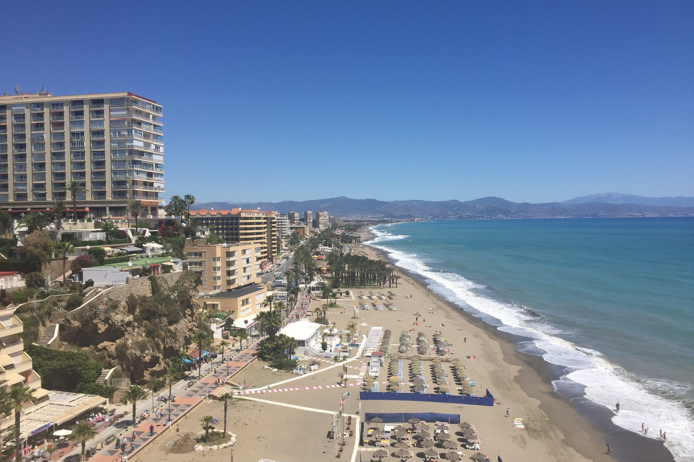

Best For
Buyers who want a walkable resort town with a long beach, year-round services and the airport minutes away by train.

A compact town 13 km from Málaga, with nearly eight kilometres of beach, a train to the airport and prices that rose 7.1% in the year to September 2026.
Torremolinos was the first resort on the Costa del Sol. The Hotel Pez Espada opened in 1959 as the coast’s first luxury hotel, and by 1965 the town was an established destination. Before that it was a small settlement whose watchtower, the Torre Pimentel, dates from the 14th century.
Today it is a town of about 71,000 people, 13 km from Málaga and about ten minutes from the airport by train, with five Cercanías stations. It covers around 20 km², and its beach runs for nearly eight kilometres along the western shore of the Bay of Málaga.
Buyers who want a walkable resort town with a long beach, year-round services and the airport minutes away by train.
The district sets the price more than the town does, from €2,704 per m² in El Pinar - Palacio de Congresos to €5,222 in Playamar.
Mostly apartments, from older blocks near the seafront to newer buildings further back.
Playamar and El Bajondillo for the sand, La Carihuela for the older seafront district, the centre for the shops and the station.
A town that was already a resort before most of the coast had one.
The Hotel Pez Espada opened in 1959 as the coast’s first luxury hotel, and by 1965 Torremolinos was an established destination. It has had longer than any other town on the Costa del Sol to become a place people live in as well as visit.
The Torre Pimentel dates from the 14th century and appears in the ordinances of 1497 as the Torre de los Molinos. The Castillo de Santa Clara dates from 1763.
A golf course opened here in 1928, described as the oldest golf club on the Spanish mainland.
The beach runs for nearly eight kilometres along the western shore of the Bay of Málaga. The town received more than a million visitors and five million bed stays in 2023, so the seafront is busy in season.
Photography: ianpudsey -- via Wikimedia Commons (CC BY 3.0).
Use the area average for orientation only. New-build pricing depends heavily on the exact location, specification and views.
Indicative asking-price averages for resale homes in September 2026. Idealista revised its method in July 2026, so read these against the June 2026 figures on the other area pages as an approximation rather than a like-for-like comparison. The town rose 7.1% over the year to September 2026, and El Bajondillo rose 25.2%.
Only projects currently matching this area are shown. Price and availability are confirmed before a viewing.
We do not publish a project here until its information is ready to compare. Tell us what you need and we will check the current releases directly.
Request a ShortlistThe average asking price for resale homes was €4,199 per m² in September 2026, up 7.1% on a year earlier. Idealista changed its method in July 2026, so compare it with the June figures on the other area pages as an approximation. By district it runs from €2,704 in El Pinar - Palacio de Congresos to €5,222 in Playamar.
Playamar and El Bajondillo are the two most expensive districts. La Carihuela - Los Nidos follows at €4,833 per m². The centre, at €3,840, is where the shops and the station are, and El Pinar - Palacio de Congresos, at €2,704, is the least expensive.
About ten minutes by train, and the town has five Cercanías stations. Málaga city is 13 km away.
Largely yes. The town is compact and the beach runs for nearly eight kilometres, so the seafront districts such as Playamar, El Bajondillo and La Carihuela are on the sand. Districts set back from the coast are a longer walk or a short drive.
Their averages are almost the same: €4,199 per m² in Torremolinos and €4,188 in Benalmádena in September 2026. Torremolinos is the longer-established resort, a compact town along nearly eight kilometres of beach; Benalmádena has a marina, a hillside village and three distinct centres. Both are on the same train line.
Yes. About 71,000 people live in the town, with services and five train stations that work outside the season. It is also busy in summer: it received more than a million visitors in 2023.
Tell us your budget and priorities. We will reply with matching projects and current availability.